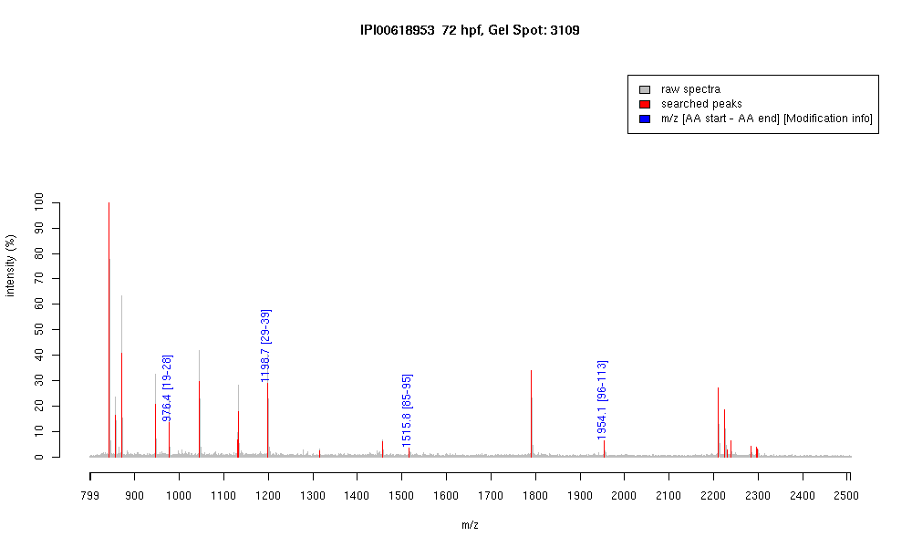

| Name | PREDICTED: similar to beta-cytoplasmicactin2 isoform 2 |
|---|---|
| MW | 15553.7 |
| PI | 5.92 |
| Mascot Protein Score | 70 |
| Masses (matched / unmatched) | 4 / 26 |

| Peptide | MZ (calc) | MZ (observed) | Error (DA) | Error (PPM) | Start | Stop | Modifications |
|---|---|---|---|---|---|---|---|
| AGFAGDDAPR | 976.4482 | 976.444 | -0.0042 | -4 | 19 | 28 | |
| AVFPSIVGRPR | 1198.7054 | 1198.7081 | 0.0027 | 2 | 29 | 39 | |
| IWHHTFYNELR | 1515.7491 | 1515.7649 | 0.0158 | 10 | 85 | 95 | |
| VAPEEHPVLLTEAPLNPK | 1954.0643 | 1954.0944 | 0.0301 | 15 | 96 | 113 |